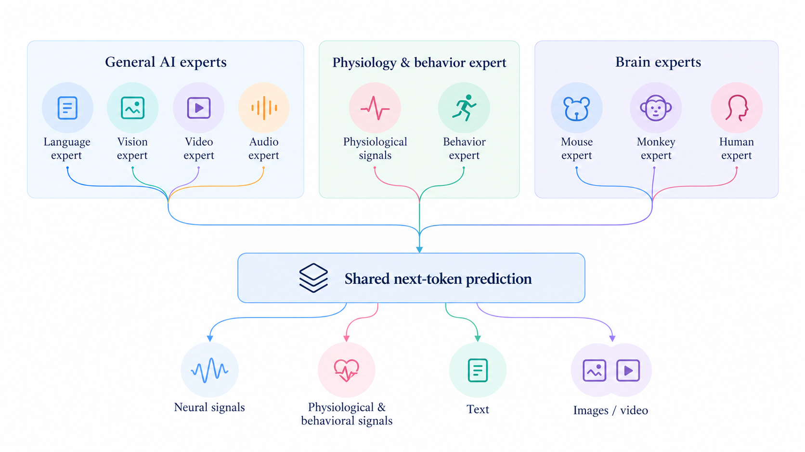

Brainμ
Building a Neuroscience Foundation Model Through Pretrained Multi-Modal W🌍rld Models
Beijing Academy of Artificial Intelligence
News The Brainμ tokenizer for mouse data is now released.
Overview
The development of universal foundation models for neuroscience has been constrained by the profound heterogeneity of neural recordings across species, modalities, individuals, and experimental paradigms. Unlike language and vision, where large-scale pretraining has yielded broadly generalizable representations, neural data remain fragmented across disparate measurement scales and experimental contexts, posing fundamental challenges to unified representation learning. Here we introduce Brainμ, a neuroscience foundation model that bridges these divides by integrating heterogeneous neural activity with knowledge acquired from pretrained multimodal models.
Brainμ encompasses 11 neural modalities across three species - humans, macaques, and mice, spanning invasive recordings at single-cell resolution, including Neuropixels electrophysiology and calcium imaging, to non-invasive measurements of macroscopic brain activity, such as EEG, MEG, fMRI, and fNIRS. By transforming heterogeneous neural signals into discrete tokens, Brainμ incorporates neural representations into a mixture-of-experts architecture that combines newly trained species-specific brain experts with pretrained experts for language, vision, audio, and video. A shared next-token prediction objective enables joint modeling of neural and non-neural modalities, establishing a unified framework for cross-modal knowledge transfer.
Within this framework, Brainμ supports any-to-any multimodal translation, enabling bidirectional transformations across neural modalities and between neural activity and external sensory representations. Moreover, we demonstrate multimodal scaling laws, revealing that increasing the diversity of neural modalities yields systematic performance gains and facilitates positive knowledge transfer across modalities. Together, these findings establish a foundation for scalable neural representation learning across species and measurement scales, advancing the development of general-purpose models for understanding and generating brain activity.
Model video
Model Architecture

Team & Citation
Brainμ team: Bo Lei, Guofan Fan, Naixin Ren, Wenjie Chen, Zhiqiang Chen, Zecheng Hao, Zhongyuan Wang, Tiejun Huang, Yulong Ao, Jiayu Bao, Biqi Chen, Boyuan Deng, Lubin Gan, Jinying Gao, Chengwang Guo, Jinjie Guo, Ying Huang, Yuran Huang, Yiming Liang, Yilin Lu, Quanyue Ma, Hongjin Niu, Yijun Niu, Tengfei Pan, Yuhui Pan, Tian Sang, Borui Shang, Junbo Shen, Zhihao Su, Guanglong Sun, Kaixi Tian, Xunlong Wang, Yahui Wei, Yushan Wu, Zijia Wu, Shenghao Xie, Hongwei Yan, Haoyu Yang, Menghan Yu, Yingli Zhao, Zicong Zhou, Wenqiang Zu.
BrainToken consortium: Yi Zhong (Tsinghua), Songhai Shi (Tsinghua), Shiming Tang (PKU), Hanchuan Peng (Fudan), Guo Zengcai Lab (Tsinghua), Yi Tang (Xuanwu), Xiaoxuan Jia (Tsinghua), Mu Zhou (Tsinghua), Xiaochuan Dai (Tsinghua), Yunzhe Liu (BNU & CIBR), BrainCo.
Cite This Work
If you find this work useful in your research, please consider citing it.
@software{brainmu,
title = {Brainmu Project},
author = {{The Brainmu Authors}},
year = {2026},
version = {1.0.0},
url = {https://github.com/BAAI-Brain-Inspired-Group/Brainmu}
}